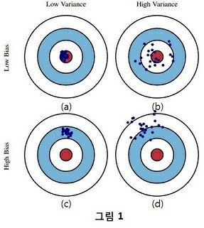
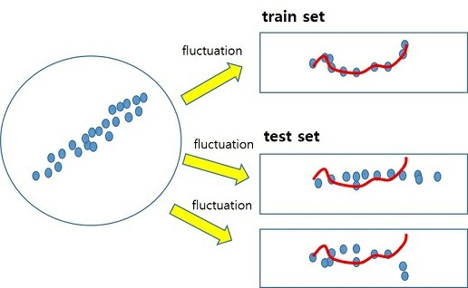
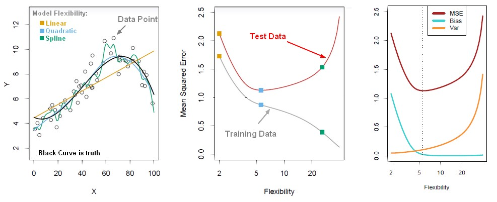
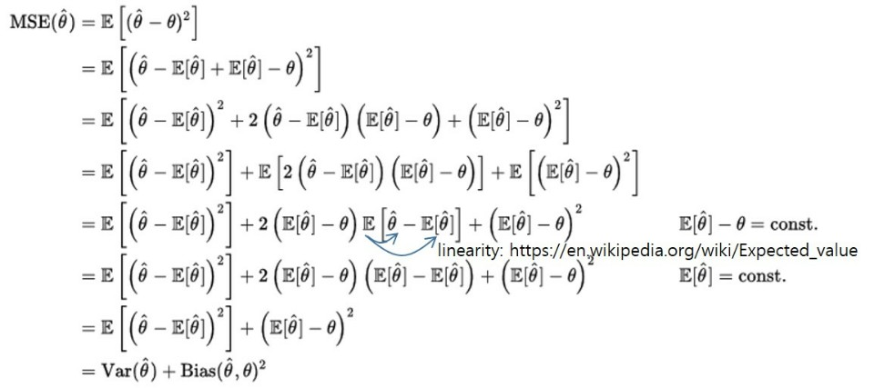

Bias vs. Variance 개념 정리
이 글에서 bias와 variance에 대해 살펴보려고 합니다. bias와 variance는 이미 많은 글이나 블로그에서 개념적으로 잘 설명되어 있습니다. 그럼에도 불구하고 다시 정리해보는 이유는 개념적으로 어느정도 이해는 되는데 좀 더 자세하게 보려고 하면, 블로그들의 예제들 간의 연결이 막혀서 헷갈리는 부분이 있어 이 글을 통해 확실히 이해하기 위해서 입니다.
Bias vs. Variance의 의미
bias와 variance는 모델의 loss 또는 error를 의미합니다. 우리는 학습 모델의 bias, variance 특성을 구분하는 아래의 그림을 많이 보았습니다. 참고로 아래 그림은 bias-variance trade off를 나타내는 그림이 아닙니다. 아래 그림으로 trade off 관계를 설명하려고 하면 연결이 잘 안될 수 있습니다. (제가 이 글을 통해서 잘 연결 시켜보도록 하겠습니다.)
bias-variance trade off는 잠 시 미뤄두고, bias와 variance의 의미를 파악하는데 집중해 보도록 하겠습니다. 아래 그림은 train data 또는 test data에 대한 결과를 bias와 variance 관점에서 해석하는 그림입니다. 붉은 색 영역은 target, 즉 참 값을 의미하고 파란 점은 추정 값을 의미합니다. 여기서 bias는 참 값들과 추정 값들의 차이(or 평균간의 거리)를 의미하고, variance는 추정 값들의 흩어진 정도를 의미합니다.(이 부분은 뒤에 Mean Square Error 수식을 통해 다시 설명하도록 하겠습니다.) bias와 variance가 loss이므로, 우리는 직관적으로 둘 다 작은 (a) 모델이 가장 좋은 모델인 것을 알 수 있습니다. (b)모델은 추정 값들을 평균한 값은 참 값과 비슷한데(bias가 작은데), 추정 값들의 variance가 커서 loss가 큰 모델입니다. (c)는 bias가 크고, variance가 작은 모델이고, (d)는 둘 다 큰 모델입니다.

위 그림을 이제 train data와 test data 관점에서 살펴보도록 하겠습니다. train data에서는 (a)와 같은 결과 이었는데(train loss가 작았는데), test data를 넣어보니 (b),(c),(d)의 결과가 나왔다고 해 보겠습니다. 3 가지 모두 train data에서는 loss가 작았는데 test data에 적용해 보니 loss가 커졌습니다. 왜 그런 것일까요?
(b),(c),(d)모두 에러가 크지만 서로 다른 유형의 에러를 나타내고 있습니다. 즉, 원인이 다르다는 것을 의미합니다. variance가 큰 (b)모델은 train data에 over-fitting된 것이 원인이고, 이는 너무 train data에 fitting된 모델을 만들어서 test data에서 오차가 발생한 것을 의미합니다. bias가 큰 (c) 모델은 test data를 위한 학습이 덜 된 것이 원인이고, 이는 train data와 test data간의 차이가 너무 커서 train data로만 학습한 모델은 test data를 맞출수가 없는 것입니다. 만일, (c) 그림이 train data에 대한 것이라면 train data에 대해 under-fitting 즉, 학습이 덜 된 모델이라고 할 수 있습니다. (d)는 둘 다의 경우로 생각할 수 있겠습니다.
데이터 관점에서 보면 (b)의 경우 train data와 test data의 차이는 variance의 차이라고 할 수 있고, (c)의 경우 train data와 test data의 차이는 평균의 차이라고도 할 수 있습니다. 학습 모델은 입력 X를 Y로 추정하는 것인데, 입력 X의 분포가 바뀌어 버리면 바뀐만큼의 error가 날 수 밖에 없습니다. 모델이 그렇게 설계되었기 때문입니다. train data와 test data의 차이가 많이 나면 어떻게 해야할까요? 즉, test data에 대해 (c)의 경우 어떻게해야 할까요? 힘들게 설계한 모델은 못쓰게 되는 것일까요? 우선적으로는 test data의 일부를 train set에 포함 시키는 것입니다. 그러나 이러한 방법은 test data에 대해서도 참 값을 labeling 해야하므로 비용도 많이 들고, 실 환경에서는 label이 없는 테스트 데이터가 들어 올 것이기 때문에 고려할 수 없게 됩니다. 이러한 문제를 해결하기 위한 분야가 바로 Domain Adaptation(DA)) 입니다. DA는 test data의 label(참값)없이 data set간의 차이를 줄여주는 네트워크를 기존 모델의 앞단에 추가하여 입력 데이터의 차이를 없애 주는 trick이라고 할 수 있겠습니다. 우리가 잘 학습한 기존 모델에 항상 유사한 입력을 넣어 오차를 줄여주겠다는 것입니다.(DA는 본 내용과 거리가 있으므로 개념적으로만 이해하면 좋을 것 같습니다.)
Bias-Variance Trade Off
위의 train-test set의 관계가 bias-variance trade off로 내용으로 연결됩니다. train data에 너무 잘 맞게 학습시키는 것은 모델 복잡도를 높이는 것을 의미합니다. regression을 예로 생각해 보면 모든 데이터를 연결하는 선을 학습시켰다면 모델 복잡도는 매우 높게 되고 train loss는 ‘0’이 될 것입니다. 그러나, train data에 잘 맞게 만들기 위해 모델 복잡도를 너무 높이면 test data에는 그림1의 (b)처럼 variance가 커져서(bias는 작은데) total loss는 오히려 증가할 수 있습니다. 반대로, 모델 복잡도를 단순하게 가져가면 학습이 덜되서 그림 1의 (c)처럼 bias가 커서(variance는 작은데) total loss는 역시 증가할 수 있습니다. 여기서 말하는 bias와 variance는 서로 상반되어서 이를 bias-variance trade off 라고 부릅니다.
왜 그런 것일까요? 왜 모델 복잡도를 높이면 over-fit 될까요?

우리가 sub set을 만들 때, 전체(통계에서 말하는 모집단)에서 샘플을 뽑아서 만들텐데, 뽑는 방법, 횟수 등에 따라 위 그림처럼 sub set 간의 변동이 발생하게 됩니다. 다시 말해서 train data와 test data는 이 변동 분 만큼 다를 수 있는 것입니다. train data는 이러한 변동을 포함하고 있는데, train error를 줄이기 위해 모델의 복잡도를 계속 높이면 이 변동 분까지 학습하게 됩니다. 아래 그림의 첫 번째가 이러한 내용을 설명한 것입니다. Linear->Quadratic->Spline으로 갈 수록 모델 복잡도가 올라가는 것을 의미하고, Quadratic이 detail한 부분까지 추정하는 것이 위에서의 언급된 샘플링 시의 변동 분까지 학습한 것이라고 할 수 있습니다. 아래의 두번 째 그림처럼 모델 복잡도를 계속 높이면 train loss는 계속해서 감소하지만, sub set간의 변동 분까지 학습하는 시점부터는 test error가 증가하게 됩니다. 이는 train data의 변동 분까지 학습하여 test data에 대한 추정 값의 variance가 증가한 그림1의 (b)와 같은 상황이라고 할 수 있습니다. 그래서 마지막 그림처럼 모델 복잡도가 올라갈 수록 bias는 감소하나 variance는 증가하는 bias-variance trade off 관계가 되는 것입니다. 마지막 그림에서 MSE는 test data의 total loss로 이해하시면 됩니다.
참고: https://gerardnico.com/wiki/data_mining/bias_trade-off

여기서 최적의 모델 복잡도는 위 그림의 세번 째처럼 bias와 variance가 교차하는 부분에서 MSE or total test loss(bias와 variance의 합)가 가장 작은 점의 복잡도를 갖는 것입니다. 즉, 모델의 학습이 train error의 최소가 아닌 test error가 최소가 되도록 해야 한다는 것으로 이해할 수 있습니다. 추가적으로 고려해볼 방법은 처음부터 train set이 갖는 변동을 작게 만드는 것입니다. 이 방법이 바로 n-fold cross validation으로 여러 data set을 만들어 평균적으로 적용시킴으로써 sub set간의 변동을 줄이는 방법이라고 할 수 있습니다.
위 그림에서 total loss를 MSE로 표기했습니다. total loss는 bias와 variance loss를 모두 포함하고 있는 것으로 그렸는데 진짜 그럴까요?
우리가 흔히 사용하는 MSE를 정리하여 다시 구성하면 아래와 같이 variance와 bias의 제곱 텀으로 표현될 수 있다.(sub-set의 변동 분은 제외한 수식입니다.)

수식으로 부터 MSE의 variance와 bias의 의미를 다시 살펴보면,
variance는 추정 값의 평균과 추정 값들간의 차이에 대한 것이고, bias는 추정값의 평균과 참 값들간의 차이에 대한 것입니다. 결국, variance는 추정 값들의 흩어진 정도이고, bias는 참 값과 추정 값의 거리를 의미합니다. 이 수식을 보면 variance는 loss를 의미하지만, 참 값과는 관계없이 추정 값들의 흩어진 정도만을 의미하고 있음을 유념해야 합니다.
MSE가 bias와 variance로 구성되어 있고 bias-variance 사이에 trade off 관계인데, 우리가 학습하면 왜 MSE는 작아지고 ‘0’에 가까이 갈까요? 여기서는 trade off 관계가 없는 걸까요?
위의 MSE의 수식을 보면 bias와 variance가 모두 제곱 텀이므로 둘 다 양수 입니다. 즉 MSE가 고정되면 하나가 커지면 하나는 작아지는 trade off 관계에 있습니다. 그런데 왜 학습을 하면 ‘0’에 가까이 수렴할까요?
우리는 학습할 때 bias나 variance의 어느 한쪽을 보고 학습하는 것이 아니라 이 둘을 더한 MSE가 작아지도록 학습을 하기 때문에 최적 값을 알아서 찾아 학습을 하게 됩니다.(아마도 두 값이 거의 같을 때 최적 값이 될 것입니다.) 우리가 주로 고민해야하는 것은 train data들의 b-v trade off가 이니라 train 후 test 할 때의 b-v trade off라고 생각하시면 됩니다. 앞서 언급한 샘플링 시 발생하는 sub set의 변동 들에 대해 고려해야 한다는 것입니다. train 에서 MSE의 최적 점을 찾았는데 train set과 test set의 차이로 test set에서는 이것이 최적점이 아닐 수 있다는 것입니다. (단, train error가 커서 train error에 대한 분석을 할 때는 train의 b-v에 대해서 고민이 필요할 것 같네요.)
b-v trade off를 한번 더 반복해 보면, 모델 복잡도를 높이면 train data에 대한 bias와 variance는 계속해서 모두 감소합니다(bias+variance이 작아지도록 학습시키므로). 그런데 test data로 평가를 해보면 MSE loss가 어느시점부터 커지는데, 커지는 이유는 test data의 MSE loss 중에서 variance가 다시 커지기 때문이라고 이해하면 좋을 것 같습니다.
그럼 딥러닝은 엄청나게 복잡도 높은 모델을 만드는데 왜 test data도 잘 맞출 수 있다고 할까요? over-fitting 문제가 없을까요?
딥러닝도 똑같이 b-v trade off를 피할 수 없습니다. 딥러닝은 그래서 big 데이터가 전제가 되어야 합니다. big 데이터라는 것은 train data가 많다는 것을 의미하고, 이는 거의 전체 데이터(또는 모집단)와 비슷하다고 할수 있으며, 앞서 말한 sampling 변동이 거의 없다는 것을 전제로 하고 있습니다. 그렇기 때문에 모델 복잡도를 도 높일 수 있는 것입니다. 만일 train data가 적은 상태로 복잡한 딥러닝 모델을 적용하면 over-fitting 문제가 발생할 수 있습니다. 전제가 그렇다는 것이고 모든 경우에 big 데이터가 있는 것은 아니여서 딥러닝에서도 이러한 문제를 없애기 위한 다양한 trick(regularization, dropout, domain adaptation 등)이 존재합니다.
결국, 딥러닝에서의 다양한 trick들은 loss를 줄이기 위한 것이고 , 이 loss는 bias와 variance로 이루어졌다는 것을 기억하면 좋을 것 같습니다. 그리고 그런한 trick들의 효과를 bias-variance 관점에서 생각해보면 다양한 딥러닝 trick들에 대한 더 좋은 이해가 되지 않을까 생각합니다.
이해 안되는 부분이나 틀린 내용있으면 comment 부탁드립니다.
다음에 시간이 되면 ensemble 기법인 bagging과 boosting을 사용했을 때 bias, variance가 어떻게 달라지는지 해석해볼 예정입니다.